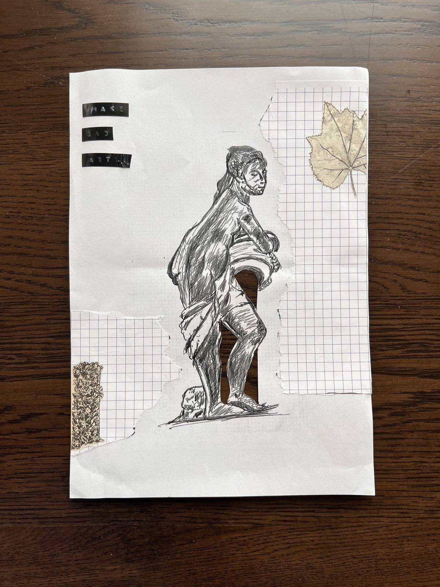
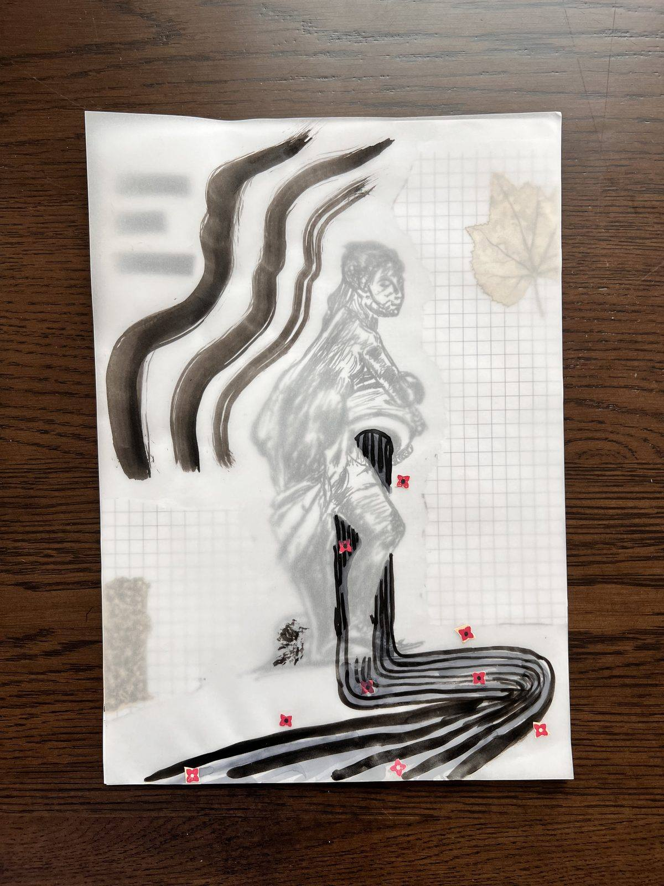
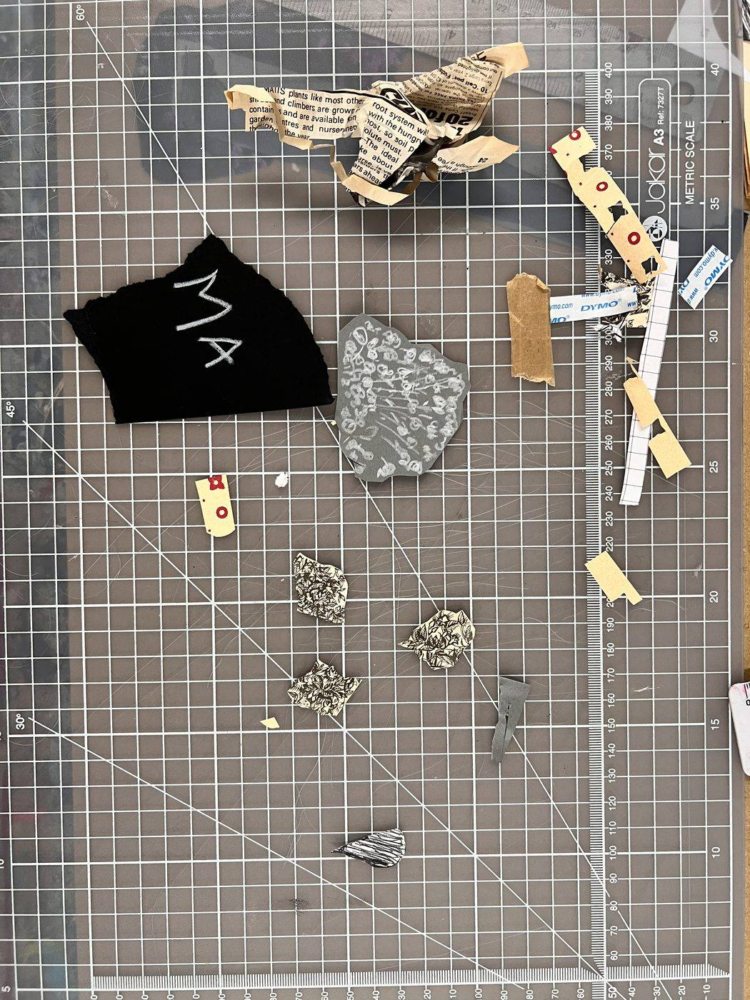
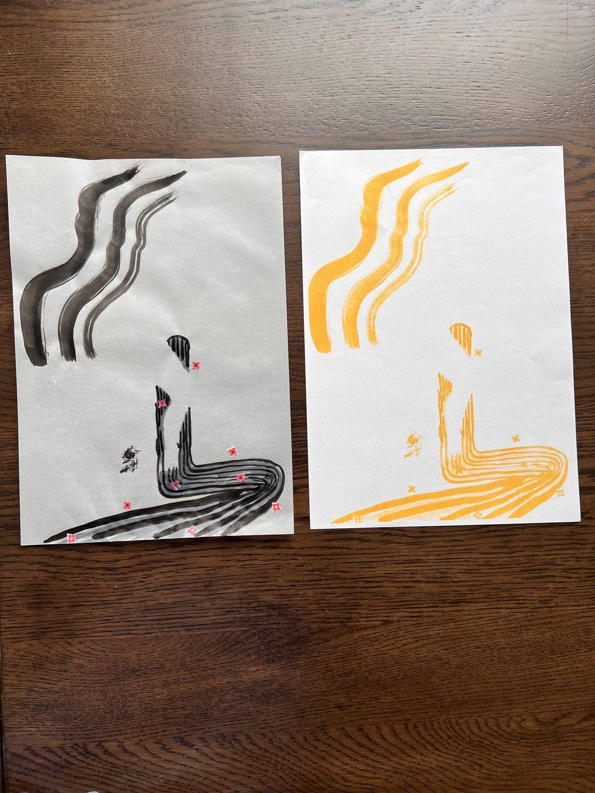
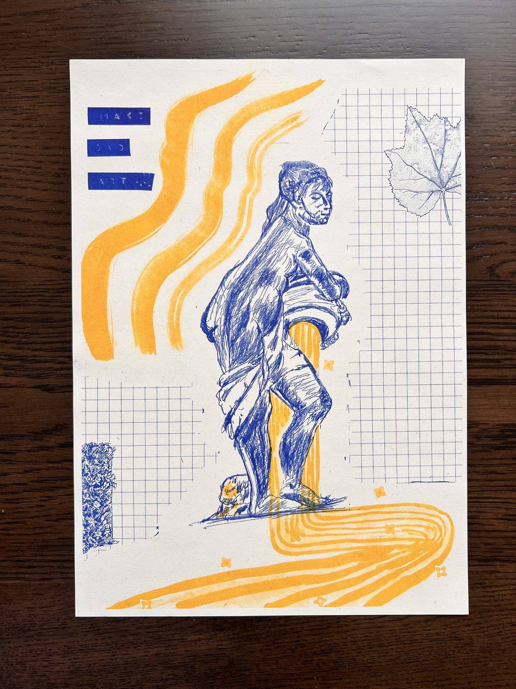
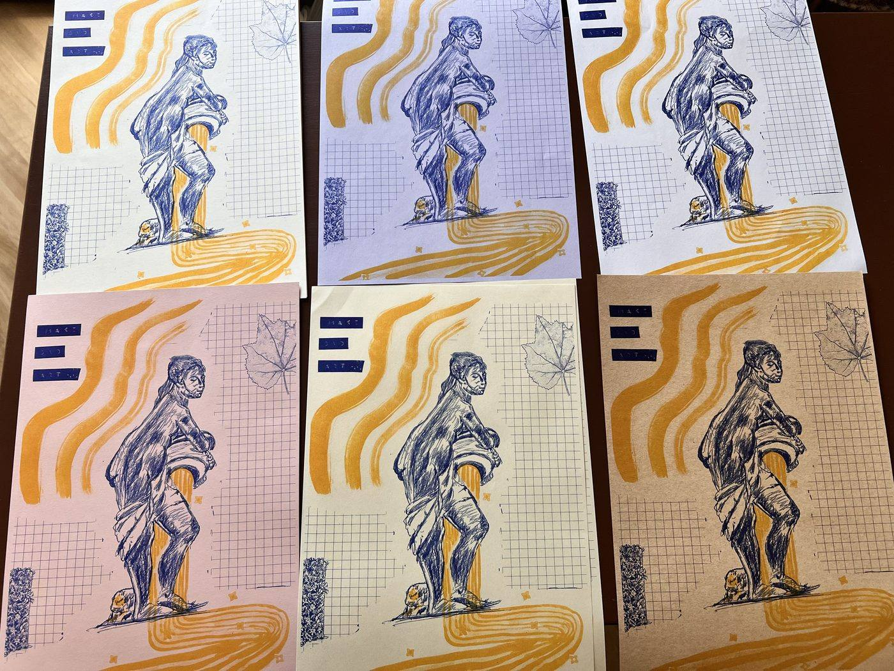

For example, I chose everything on this piece of white A4 to be what I printed in blue — it includes a photocopy of the recent sketch I did, some torn bits of graph paper, some illustrations of leaves and flowers cut out from an old gardening magazine, some words from an old label maker.
Even though this will be printed in blue — while designing we think in grayscale — the darker the element on the paper like the sketch — the more saturated the blue ink will be in the print. The leaf for example is not as dark and will be printed a lighter blue.


Everything drawn, or stuck onto the tracing paper will be printed in yellow. I wanted some lovely yellow colored highlights around my sketch so I used a paintbrush dripped in black to draw lines where I wanted the yellow to show. I also added some little cutouts of stars that I stuck to the piece of paper.
The pictures just show my final choice, but there were many other cut outs and bits that I had played about with including, and in the end, chose not to. Because I have the tracing paper on top of the other paper I could very easily move things around, visualize how it might look. if I didn't like how something looked, then I removed it.
Once I was happy with how all the elements were coming together then I just glued the different bits down. And then it's time to feed things into the printer.

For example, we loaded the yellow cartridge and placed my yellow layer in the scan bed.
The machine creates a little stencil based on the scan. And then you're ready to print how many ever copies you need. We printed all the yellow copies first.


Placed the paper containing my blue layer on the scan bed. Fed the printed pages back into the printer so that the blue could be printed on top of the yellow.
Here's the output. I didn't play much with overlap based on the instructors advice for the particular colors I had picked. But I could have had more of my blue and yellow elements overlap so that they created areas of green ink. Something to try next time.
I experimented with different textures and colors of paper for the final print — and got some really interesting and unexpected variations. And its very satisfying to see them all laid out like this 🙂
